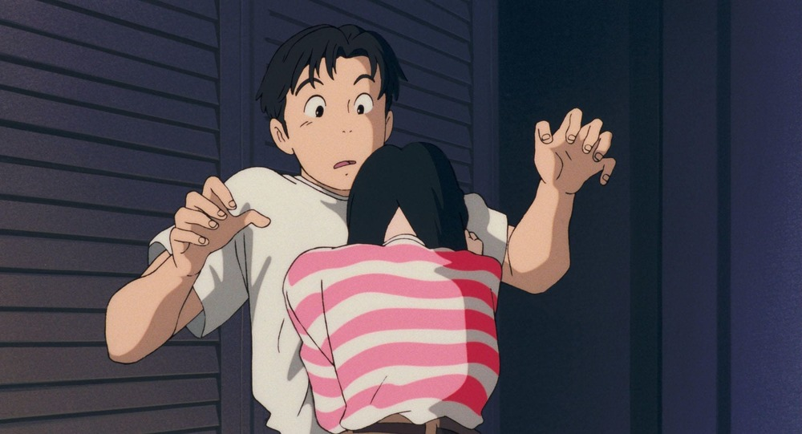

Studio Ghibli

Ghibli มีความหมายว่า ‘ลมร้อนที่พัดผ่านผืนทะเลทรายซาฮาร่า’ เป็นศัพท์ที่นักบินชาวอิตาลีเอาไว้ใช้เรียกเครื่องบินสอดแนมของตัวเองในช่วงสงครามโลกครั้งที่ 2
โดยฮายาโอะนำมาตั้งชื่อสตูดิโอของตัวเองด้วยเหตุผล 2 ประการ
คือความหลงใหลในเครื่องบินเป็นการส่วนตัว
กับ เปรียบเทียบให้รู้ว่าสตูดิโอแห่งนี้
จะเป็นเหมือนลมแรงที่พัดกระหน่ำวงการแอนิเมชันญี่ปุ่นให้สั่นสะเทือน
Ghibli ได้เริ่มสร้างผลงานโทรทัศน์เป็นครั้งแรกด้วย ซึ่งคือ “ โอเชี่ยนเวฟส์ สองหัวใจหนึ่งรักเดียว (Ocean Waves)
ปีถัดมา Ghibli ก็คว้ารางวัลภาพยนตร์ยอดเยี่ยมแห่งปีมาได้อีกครั้งกับผลงานเรื่อง “ปอมโปโกะ ทานูกิป่วนโลก (Heisei-era Raccoon Dog War Pom Poko)”
ที่กำกับโดยคุณทาคาฮาตะ อีกทั้งเรื่องนี้ยังถือเป็นความสำเร็จอีกก้าวของทีมงานอนิเมเตอร์รุ่นใหม่ที่เคยร่วมสร้างผลงานเรื่อง
ในความทรงจำที่ไม่มีวันจาง (Omohide Poro Poro) มาก่อนด้วย
นอกจากนี้ปอมโปโกะ ทานูกิป่วนโลก ยังเป็นเรื่องแรกที่ Ghibli ได้นำเทคนิค CG เข้ามาใช้
แม้ว่าจะมีเพียง 3 cut เท่านั้น แต่ก็ถือว่าเป็นก้าวแรกที่จุดกระแสการใช้ CG ใน ผลงาน

Ocean Waves
ในปี ค.ศ.1995 เปิดตัวด้วยแอนิเมชั่นเรื่อง “วันนั้น วันไหน หัวใจจะเป็นสีชมพู (Whisper of the Heart)”
คุณมิยาซากิลงแรงเองทั้งสร้าง เขียนบท และเขียนสตอรี่บอร์ดด้วยตัวเอง และยังสร้างความท้าทายอีกขั้น
โดยการให้คุณโยชิฟุมิ คนโดผู้เคยมีผลงานกำกับภาพจากเรื่อง “สุสานหิ่งห้อย (Grave of the Firefly)”,
“แม่มดน้อยกิกิ (Kiki’s Delivery)”, “ในความทรงจำที่ไม่มีวันจาง (Omohide Poro Poro)” มาเป็นผู้กำกับเรื่องนี้ให้เป็นครั้งแรก
นอกจากนี้ยังนำ “Digital compositing” ซึ่งคือเทคนิคการจัดองค์ประกอบภาพแบบดิจิทัลเข้ามาใช้
โดยมีวัตถุประสงค์ในการเร่งนำเทคโนโลยีดิจิตัลเข้ามาใช้ที่หน้างานเพื่อสร้างผลงานที่แปลกใหม่และนำสมัย
ซึ่งก็เหมาะมากเพราะ Whisper of the Heart เป็นเรื่องราวที่นำเสนอภาพลักษณ์อันสดใสในช่วงวัยรุ่นซึ่งแปลกใหม่กว่าแนวที่เคยทำ